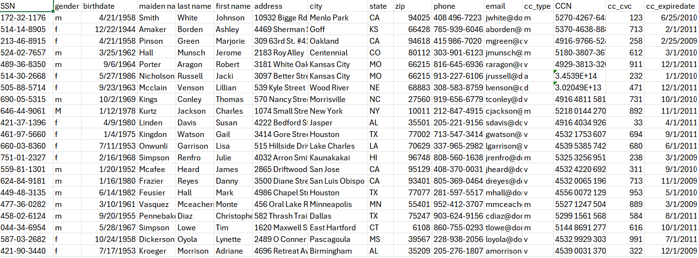
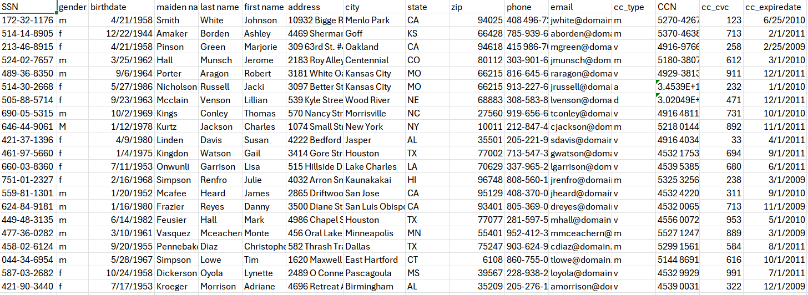

Demonstration with Personal Data
Below is a demonstration of how some fake personal data could be hidden inside of a jpg. The data is inside of a csv file and it contains fictitious yet realistic looking social society numbers, birthdates, names, addresses, home city and state, and phone number on 31 fake people [1]. A malicious actor or even someone entrusted with the data might use a tool like Steghide to conceal information deep within a hard drive, keeping it hidden from prying eyes, or to transmit it without leaving a trace.
To begin, the ls command will show that we have two files.
┌──(Julio㉿DESKTOP-STHA33J)-[/mnt/c/Users/Julio/Pictures/steghide_example]
└─$ ls
ferrari.jpg sample-data.csv
These are the contents of the csv file. As you can see although this is fake information the data looks and feels real.
Now I will run the following command. The -cf denotes that we are going to use ferrari.jpg as the cover file. In other words this is the file that we will hide our data behind. The -ef denotes the embedded file. This is the file we will be hiding. The -sf gives the new file we will be creating a name. This file will look exactly like our original cover file and within its pixels will be the content of the embedded file. Lastly -p sets mysecretpass as the passphrase required to extract the hidden under layer.
┌──(Julio㉿DESKTOP-STHA33J)-[/mnt/c/Users/Julio/Pictures/steghide_example]
└─$ steghide embed -cf ferrari.jpg -ef sample-data.csv -sf steg_ferrari -p mysecretpass
embedding "sample-data.csv" in "ferrari.jpg"... done
writing stego file "steg_ferrari"... done
The ls command will now show us that there are now three files as expected.
┌──(Julio㉿DESKTOP-STHA33J)-[/mnt/c/Users/Julio/Pictures/steghide_example]
└─$ ls
ferrari.jpg sample-data.csv steg_ferrari.jpg
Visually the difference between the ferrari and steg_ferrari are zero and the human eye could never identify that one image contains hidden data by appearance alone. This is what both images look side by side.


Once again there is no visual difference but the data is certainly contained within steg_ferrari and to prove it I will run the following command. The output of running this command will ask for the passphrase and if I enter it in correctly we will be given information about the hidden file.
┌──(Julio㉿DESKTOP-STHA33J)-[/mnt/c/Users/Julio/Pictures/steghide_example]
└─$ steghide info steg_ferrari.jpg
"steg_ferrari.jpg":
format: jpeg
capacity: 16.2 KB
Try to get information about embedded data ? (y/n) y
Enter passphrase:
embedded file: "sample-data.csv":
size: 4.6 KB
encrypted: rijndael-128, cbc
compressed: yes
Next to demonstrate the extraction of an embedded file I will run the following command.
┌──(Julio㉿DESKTOP-STHA33J)-[/mnt/c/Users/Julio/Pictures/steghide_example]
└─$ steghide extract -sf steg_ferrari.jpg -xf extracted.csv -p mysecretpass
wrote extracted data to "extracted.csv".
The -sf specifies the stego file the -xt specifies what file to output to and -p gives it the password. If our password is correct we will have access to the embedded data in a new file and running ls shows that we do in fact have a new file with the name of extracted.csv.
┌──(Julio㉿DESKTOP-STHA33J)-[/mnt/c/Users/Julio/Pictures/steghide_example]
└─$ ls
extracted.csv ferrari.jpg sample-data.csv steg_ferrari.jpg
These are the contents of extracted.csv and as you can see they are identical to the original sample-data.csv data. In this demo you have seen the embedding and extraction of sensitive data into an image.
Thank you for reading.